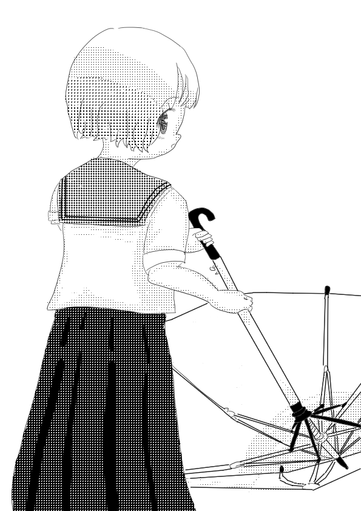

gakuseihuku.moe(トップ)＞Blog.gakuseihuku.moe(現在)/
 ※「*.gakuseihuku.moe/*」の検索ができます。
※「*.gakuseihuku.moe/*」の検索ができます。

- 【携帯電話新調】G'z One TYPE-XX
- ゆく年くる年
- 通販で、防水のメモ帳を注文した。
- 携帯電話新調案としてのBALMUDA Phone
- たまには人と会うのもいいかもしれない。
- ドメインの取得と縦書きの導入。
- 【携帯電話新調】Titan Slim
